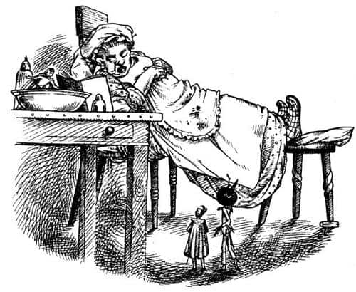
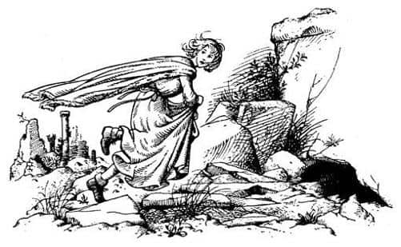

Önemli Bir Bilgiyi Nasıl Keşfettiler
Daha sonra diğerleri, Jill’in o gün harika bir iş yaptığını kabul ettiler. Kral ve av partisinin davetlileri yola çıkar çıkmaz tüm kaleyi dolaşmaya ve sorular sormaya başlamıştı, ama tüm bunları öylesine çocukça ve masum bir tavırla yapmıştı ki, kimse onun gizli bir planı olduğundan kuşkulanmadı. Dili hiç durmuyordu, ama buna konuşma denemezdi pek, gevezelik edip kıkırdıyordu. Tımarcılar, kapıcılar, hizmetçiler, nedimeler ve avlanmak için çok yaşlı olan dev lordlarla, herkesle gevezelik ediyordu. Neden olduğunu açıklamasalar da ona “zavallı küçük şey” diyen ve onun için üzülen bir sürü dev tarafından öpülüp ellenmeye ses çıkarmamıştı. Aşçıyla özel bir dostluk kurdu ve önemli bir gerçeği, yani ana kapıyı ya da avluyu kullanmadan duvarların dışına çıkmanın yolunu öğrendi. Bir bulaşıkhane kapısı vardı. Mutfakta açgözlüymüş gibi davranıp, aşçının ve bulaşıkçıların ona vermekten memnuniyet duydukları her türlü artığı yedi. Yukarıda kadınlara ziyafette ne giyeceği hakkında sorular sorup, gece kaçta uyuması gerektiğini ve çok çok küçük bir devle dans edip edemeyeceğini sordu. Sonra dev olsun olmasın bütün yetişkinlerin çok alımlı bulduğu bir şekilde, başını bir yana eğdi, kıvırcık saçlarını sallayıp kıkırdayarak, “Ah, keşke yarın gece, hemencecik geliverse, ne dersiniz? Sizce zaman çabuk geçer mi?” dedi. Tüm dev kadınlar onun mükemmel bir küçük kız olduğunu söyledi, bazıları ağlayacakmış gibi olmuş, gözlerini kocaman mendillerle silmişlerdi.
“Bu yaşta ne kadar da küçük ve tatlı oluyorlar” dedi bir dev diğerine. “Yazık olacak—”
Scrubb ve Suratsız ellerinden geleni yaptılar, ama bu tür şeylerde kızlar daha beceriklidir. Hatta oğlanlar bile bu işleri Kıllıkıpırdaklardan daha iyi yapar.
Öğle yemeğinde yaşananlar nazik devlerin kalesini bir an önce terk etmek istemelerine yol açtı. Büyük salonda şöminenin yanında kendilerine ait küçük bir masada onlar, yirmi metre ilerdeki büyük masada da yaşlı devler yemek yiyordu. Konuşmaları o kadar yüksek sesli ve öyle gürültülüydü ki, çocuklar çok geçmeden, bu gürültünün caddedeki trafikten ya da fabrika düdüklerinden kaynaklandığını varsayıp, söylenenlere dikkat etmemeye başladılar. Jill’in daha önce hiç tatmadığı bir yemek, soğuk geyik eti yiyorlardı, Jill bundan hoşlanmıştı.
Aniden Suratsız onlara döndü. Yüzü soluktu, doğal çamur rengi teninin buruş buruş olduğunu görebiliyordunuz.
“Bir lokma daha yemeyin” dedi.
“Ne var?” diye sordu diğer ikisi fısıltıyla.
“Devlerin ne dediğini duymadınız mı? ‘Bu iyi ve yumuşak bir geyik budu’ dedi biri. ‘O zaman o geyik yalancıydı’ dedi diğeri. ‘Neden?’ diye sordu birincisi. ‘Ah’ dedi diğeri. ‘Diyorlar ki, yakalandığında, beni öldürmeyin. Etim serttir benim. Beni sevmeyeceksiniz’ demiş.” Jill ilk başta bunun ne anlama geldiğini kavrayamamıştı. Scrubb gözlerini kocaman açıp, “Öyleyse biz konuşan geyik yedik” deyince olan biteni anladı.
Bu keşif hepsinde aynı etkiyi yaratmamıştı. Bu dünyada yeni olan Jill zavallı geyik için üzüldü ve öldürülmesinin devlerin yaramazlığı olduğunu düşündü. Bu dünyada daha önce de bulunan ve en azından bir tane konuşan hayvan arkadaşı olan Scrubb, bu cinayet karşısında dehşete düşmüştü. Narnia’da doğmuş olan Suratsız’ın midesi bulandı, kendini bayılacakmış gibi hissetti. Bir bebek yediğinizi öğrendiğinizde emin olun daha kötü hissetmezsiniz kendinizi.
“Aslan’ın gazabına uğradık” dedi. “İşaretlere dikkat etmediğinizde böyle olur. Sanırım lanetlendik. Eğer izin verilseydi yapabileceğimiz en iyi şey şu bıçakları alıp kalbimize saplamak olurdu.”
Jill, Suratsız’ın ne demek istediğini yavaş yavaş anlamaya başlamıştı. Her neyse, artık hiçbiri yemek istemiyordu. Emniyette olduklarını anlar anlamaz salonu sessizce terk ettiler.
Öğle vakti yaklaşıyordu, tüm umutları devlerin uykuya dalmasıydı, hepsinin sinirleri gergindi. Koridorlarda dolaşıp ortalığın sakinleşmesini beklediler. Salondaki devlerin yemekleri bittikten sonra uzunca bir süre oturdular. Kel olanı bir hikâye anlatıyordu. Hikâye bittiğinde üç yolcu ağır ağır mutfağa indi. Ancak orada hâlâ bir sürü dev çalışmaktaydı, en azından bulaşıkhanede, bulaşıkları yıkayıp kapkacağı yerlerine yerleştiren devler vardı. İşlerini bitirmelerini, ellerini silip uzaklaşmalarını beklemek ıstırap vericiydi. Sonunda odada sadece bir dev kadın kalmıştı. Kadın oyalandı da oyalandı ve sonunda yolcularımız dehşetle, onun mutfaktan ayrılmaya hiç niyetli olmadığını anladı.
“Pekâlâ tatlılarım” dedi onlara. “Bu iş de bitmek üzere. Çaydanlığı şuraya koyalım. Az sonra demlenir. Artık biraz dinlenebilirim. Tatlı çocuklar gibi bulaşıkhaneye bakın ve bana arka kapının açık olup olmadığını söyleyin.”
“Evet, açık” dedi Scrubb.
“Doğru. Kedinin girip çıkabilmesi için devamlı açık bırakırım, zavallı şey.”
Sonra bir sandalyeye oturdu ve bir diğerine de ayaklarını uzattı.
“Kestirip kestiremeyeceğimi bilmiyorum” dedi dev kadın. “Şu körolası av partisi çabuk bitmez umarım.”
Kestirmekten bahsettiğinde hepsi heyecanlandı, av partisi dönüşünden bahsettiğindeyse hayalleri yıkıldı.
“Genellikle ne zaman geri dönerler?” diye sordu Jill.
“Hiç bilinmez” dedi dev. “Buraya bakın; biraz uzaklaşın ve sessiz olun, tatlılarım.”
Mutfağın diğer ucuna çekildiler; kadın dev bir sineği kovalamak için gözlerini açmazsa, oradan da sessizce bulaşıkhaneye geçeceklerdi. “Uyuduğundan emin olmadan denemeyelim” dedi Scrubb. “Yoksa bütün planlarımız bozulur.” Böylece mutfağın kenarında birbirlerine sokuldular ve etrafı gözleyip beklemeye başladılar. Avcıların her an dönebileceği düşüncesi çok korkunçtu ve dev kadın da kıpır kıpırdı. Tam uyuduğunu düşündükleri an kıpırdanıyordu.

“Buna dayanamam” diye düşündü Jill. Aklını dağıtmak için etrafına bakınmaya başladı. Tam önünde üzerinde iki temiz turta tabağı, bir de açık bir kitabın olduğu geniş, temiz bir masa vardı. Kuşkusuz bunlar dev turta tabaklarıydı. Jill tabaklardan birinin içinde rahatça uzanabileceğini düşündü. Sonra kitaba bakmak için masanın yanındaki sıraya tırmandı. Şunlar yazılıydı:
YEŞİLBAŞ ÖRDEK. Bu lezzetli kuş değişik yöntemlerle pişirilebilir.
“Bir yemek kitabı” diye düşündü Jill ve omzunun üstünden geriye baktı. Devin gözleri kapalıydı, ama uyuyormuş gibi görünmüyordu. Jill tekrar kitaba baktı. Harf sırasına göre düzenlenmişti. Diğer tariflere bakınca kalbi duracakmış gibi oldu; şöyle yazılıydı:
İNSAN. Bu zarif iki ayaklı hayvan uzun süreden beri lezzetli bir yiyecek olarak değerlendirilir. Sonbahar Şenlikleri yemeklerinin geleneksel bir parçasını oluşturur, balık ve et arasında servis yapılır. Her insan…
Daha fazla okumaya dayanamadı. Arkasını döndü. Dev uyanmıştı ve bir öksürük krizi geçiriyordu. Jill diğerlerini dürttü ve kitabı işaret etti. Onlar da sıraya tırmanıp kitabın üzerine eğildiler. Suratsız başka bir tarifi işaret ettiğinde Scrubb hâlâ insanın nasıl pişirileceğini anlatan tarifi okuyordu. Suratsız’ın okuduğu tarif şöyleydi:
KILLIKIPIRDAK. Bazı otoriteler bu hayvanı, çamursu tadı ve lifli eti yüzünden devlerin tüketimine uygun olmadığı düşüncesiyle tamamen dışlarlar. Ancak tadı, bazı yöntemlerle lezzetlendirilebilir…
Jill, Suratsız ve Scrubb’ın ayağına yavaşça dokundu. Üçü birden arkalarına, deve baktı. Ağzı hafifçe açıktı, burnundan çıkan ses müzikten daha tatlıydı. Dev horluyordu. Artık tüm sorun, çok hızlı davranmadan, mümkün olduğunca az nefes alarak, ayaklarının ucuna basarak yürümek, bulaşıkhaneden dışarıya (dev bulaşıkhaneleri iğrenç kokar) kış gününün soluk güneşine çıkmaktı.
Aşağıya doğru inen küçük, kaba ve dikçe bir patikanın başındaydılar. Tanrı’ya şükür Harabe Şehir kalenin sağ tarafında görülüyordu. Birkaç dakikada kalenin ana kapısından gelen geniş ve dik yola çıktılar. Kalenin o yüzündeki herhangi bir pencereden görülebilirlerdi. Eğer bir, iki ya da beş pencere olsaydı, pencerelerde kimsenin olmama şansı vardı, ama beş değil neredeyse elli pencere sayabilirlerdi. Yürüdükleri yolun, hatta kendileriyle Harabe Şehir arasındaki koca alanın bir tilkiyi bile gizleyemeyeceğini anladılar; çakıllar, yassı taşlar ve otlarla kaplıydı. İşin kötüsü, dün gece devlerin onlara verdiği elbiseleri giyiyorlardı, tabii Suratsız hariç, çünkü verilen hiçbir giysi ona uymamıştı. Jill epey uzun yeşil bir elbise, üzerine de kenarları beyaz kürkten kırmızı bir manto giyiyordu. Scrubb kırmızı çoraplar, mavi bir elbise, pelerin ve tüylü bir şapka giymişti ve altın kabzalı bir kılıç taşıyordu.

“İkinizin de üzerinde canlı renkte elbiseler var” diye homurdandı Suratsız. “Kış günü harika bir şekilde görülür. Atış mesafesi içinde olsanız dünyadaki en kötü okçu bile şaşırmazdı hedefi. Okçulardan bahsetmişken, yakında yaylarımızı yanımıza almadığımıza pişman olursak şaşmam. Elbiseleriniz birazcık ince değil mi?”
“Evet, şimdiden donuyorum” dedi Jill.
Birkaç dakika önce mutfaktayken, kaleden çıkınca rahatlayacaklarını düşünüyordu. Ancak şimdi, en tehlikeli bölümün yeni başladığını anlamıştı.
“Sakin olun, sakin olun” dedi Suratsız. “Arkanıza bakmayın. Çok hızlı yürümeyin. Ne yaparsanız yapın koşmayın. Gezintiye çıkmış gibi davranın, biri bizi görürse büyük ihtimalle aldırmayacaktır. Kaçıyormuş gibi göründüğümüz an işimiz biter.”
Harabe Şehir’e olan mesafe Jill’in düşündüğünden çok daha fazlaydı. Ama yavaş yavaş da olsa yaklaşıyorlardı. Sonra bir ses duyuldu. Diğer ikisinin nefesleri kesilmişti. Ne olduğunu anlamayan Jill, “Bu da ne?” diye sordu.
“Av borusu” diye fısıldadı Scrubb.
“Sakın koşmayın” dedi Suratsız. “Ben söyleyene kadar bekleyin.”
Jill omzunun üzerinden geriye bakmadan edemedi. Yaklaşık yarım mil ötede, sol taraftan av partisi geri dönüyordu. Yürümeye devam ettiler. Aniden devler büyük bir yaygara kopardı, sonra da bağırışlar, haykırmalar duyuldu.
“Bizi gördüler. Koşun” dedi Suratsız. Jill, ayağına dolaşan eteğini topladı ve koşmaya başladı. Tehlikede olduklarından kimsenin kuşkusu yoktu artık. Jill köpeklerin havlamalarını duyabiliyordu. Kral’ın, “Takılın peşlerine, yoksa yarın insan turtası yiyemeyiz” diye gürlediğini duyabiliyordu.
Elbise yüzünden hantallaşan, saçları ağzına giren, oynak taşların üzerinde koşmaya çalışan ve yorgunluktan göğsüne ağrılar giren Jill arkada kalmıştı. Köpekler iyice yaklaştı. Dev merdivenlerin en alt basamağına giden taşlık yokuştan yukarıya koşmak zorundaydı. Oraya ulaştıklarında ne yapacaklarına dair en ufak bir fikri yoktu ve tepeye ulaştıklarında daha iyi bir durumda olup olmayacaklarını da bilmiyordu. Ama bunu hiç düşünmüyordu. Artık bir av hayvanı gibiydi; köpek sürüsü ardında olduğu sürece, ölene kadar koşmalıydı.
Kıllıkıpırdak önlerindeydi. En alt basamağa geldiğinde durdu, sağına baktı ve aceleyle basamağın altındaki bir boşluğa ya da çatlağa doğru atıldı. Kovuğun içinde kaybolan uzun bacakları bir örümceğinkine benziyordu. Scrubb duraksadı ve sonra o da onun ardından kayboldu. Nefesi kesilen ve sendeleyen Jill oraya bir dakika sonra geldi. Pek de hoş olmayan bir yerdi; bir metre genişliğinde ve otuz santim yüksekliğinde bir çatlak. Kendini yüzüstü yere atıp, sürünerek girmesi gerekiyordu. Kimse bunu o kadar çabuk yapamazdı. İçeriye giremeden bir köpeğin dişlerinin topuklarına geçeceğinden emindi. Ama böyle bir şey olmadı.
“Çabuk, çabuk. Taşlarla aralığı doldurun” diye bağırdı Suratsız karanlığın içinden. Girdikleri açıklıkta içerisi karanlıktı. Diğer ikisi tüm güçleriyle çalışıyordu. Scrubb küçük elleriyle, Suratsız ise, donuk ışıkta kapkara görünen kocaman elleriyle umutsuzca taş yığmaya çalışıyordu. Jill, sonra bunun ne kadar önemli olduğunu anladı ve el yordamıyla büyük taşlar bulup diğerlerine vermeye başladı. Köpekler kovuğun ağzında ulumaya ve acı acı havlamaya başlamadan önce deliği iyice kapatmışlardı; artık içerisi kapkaranlık olmuştu.
“İlerleyin, çabuk” dedi Suratsız’ın sesi.
“El ele tutuşalım” dedi Jill.
“İyi fikir” dedi Scrubb. Ancak birbirlerinin ellerini bulmaları oldukça uzun sürdü. Köpekler taşların öte yanını kokluyordu.
“Ayağa kalkmayı deneyelim” diye önerdi Scrubb. Denediler ve kalkabileceklerini anladılar. Sonra Suratsız hemen arkasındaki Scrubb’ın elini ve Scrubb da (en sonda değil de ortada olmayı arzulayan) Jill’in elini tuttu, karanlığa doğru tökezleyerek ilerlemeye başladılar. Ayaklarının altı gevşek taşlarla doluydu. Suratsız bir kaya duvarına kadar ilerledi. Sağa dönüp ilerlemeye devam ettiler. Birçok dönemeç vardı. Jill yön duygusunu kaybetmişti, kovuğun ağzının nerede olduğu hakkında hiçbir fikri yoktu.
“Aslında sorun şu” dedi Suratsız’ın sesi karanlığın içinden, “bire on bahse girerim ki ejderhaların, derin çukurların, türlü gazların ve zehirli suların olduğu bu tepenin derinliklerinde kaybolmaktansa, geriye dönüp (tabii eğer dönebilirsek) devlere güzel bir ziyafet çekmek daha akıllıca – Of! Bırak! Kendinizi kurtarın. Ben—”
Bundan sonra her şey çok çabuk olup bitti. Vahşi bir çığlık, tozlu çakılların hışırdama sesi, taşların çatırtısı duyuldu ve Jill kendini gittikçe dikleşen bir yokuştan, umutsuzca aşağıya doğru kayarken buldu. Giderek hızlanıyordu. Pürüzsüz bir yokuş değildi bu, aksine küçük taşlar ve çöpler vardı. Ayağa kalkabilseydiniz bile bir yararı olmazdı. Ayağınızı koyacağınız her nokta altınızdan kayıp sizi aşağı çekerdi. Jill, boylu boyunca uzanmıştı. Kaydıkça toprağı ve taşları yerinden oynatıyorlardı, böylece her şey (kendileri de dahil) büyük bir gürültü eşliğinde daha da hızlanıyor, her yerleri toz toprak içinde kalıyordu. Jill diğerlerinin acı çığlıklar atıp küfürler savurduğunu duyduğunda, yerinden oynattığı taşların Scrubb ve Suratsız’a isabet ettiğini düşündü. Artık korkunç bir hızla gidiyorlardı, dipte paramparça olacaklarına emindi.
Nasıl olduysa parçalanmadılar. Bir sürü morlukları vardı, Jill’in yüzündeki ıslak ve yapışkan şey kana benziyordu. Etrafına (kısmen de üzerine) o kadar çok toprak ve çakıl yığılmıştı ki, ayağa kalkamadı. Karanlık öylesine yoğundu ki, gözlerinizin açık ya da kapalı olması hiç fark etmiyordu. Hiç ses yoktu. Bu Jill’in düşünebileceği en kötü andı. Ya yalnızsa? Ya diğerleri? Sonra etrafındaki kıpırtıları duydu. Az sonra titrek sesle birbirlerine bir yerlerinin kırılmadığını anlatıyorlardı.
“Geldiğimiz yere asla geri çıkamayız” dedi Scrubb.
“Ne kadar sıcak olduğunu fark ettiniz mi?” dedi Suratsız. “Bu çok derinlerde olduğumuz anlamına gelir. Belki de bir mil.”
Kimse bir şey söylemedi. Bir süre sonra Suratsız ekledi:
“Kav kutum kaybolmuş.”
Uzun bir duraklamadan sonra Jill, “Çok susadım” dedi.
Kimse bir şey yapmayı önermedi. Aslında yapılacak bir şey yoktu zaten. O an bunun farkında değillerdi; nedeni çok yorgun olmalarıydı.
Uzun süre sonra, çok tuhaf bir ses işittiler. Bunun, ümit ettikleri ses, yani Aslan’ın sesi olmadığını hemen anlamışlardı. Boğuk bir sesti – karanlık bir ses.
“Buraya neden geldiniz, Yerüstü yaratıkları?” diye sordu ses.